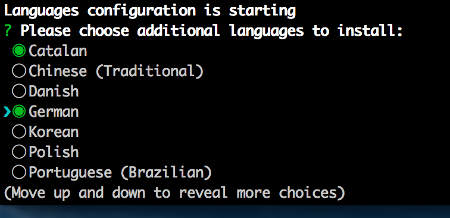

During the generation of a new project, JHipster only installs English and French languages.
However, JHipster supports more languages that can be installed using this sub-generator.
In order to install new languages, just type:
yo jhipster:languages

All languages are saved in the folder /src/main/webapp/i18n
Here are the steps to install a new language called new_lang:
/src/main/webapp/i18/en folder to /src/main/webapp/i18/new_lang /src/main/webapp/i18/new_langUpdate the LANGUAGES constant defined in the folder src/main/webapp/components/language/language.service.js
to add the new language new_lang
.constant('LANGUAGES', [
'en', 'fr', 'new_lang'
//JHipster will add new languages here
]
The new language new_lang is now available in the language menu.